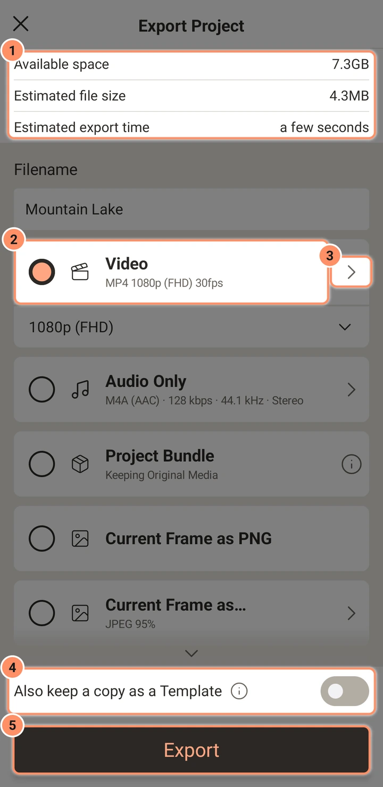
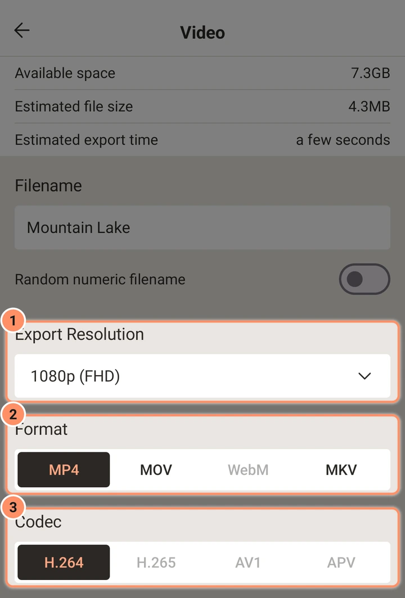
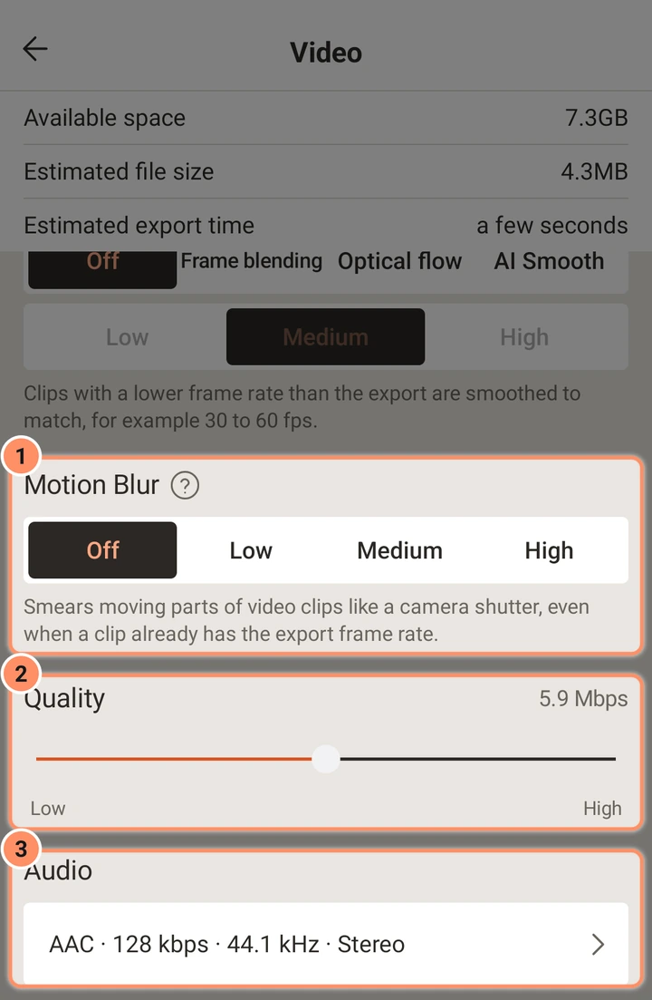
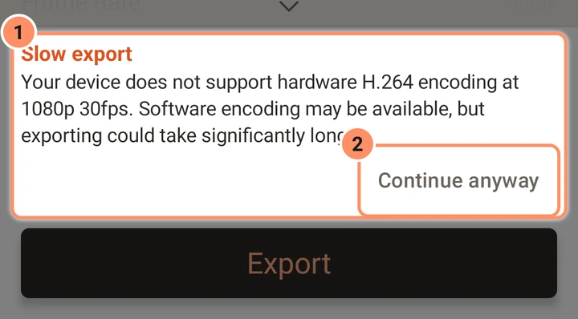

تصدير
كل خيارات التصدير: صيغ الفيديو والترميزات، الدقة، معدل الإطارات، GIF، تسلسلات الصور، ملفات الصوت، حزم المشروع، والفحوصات التي يجريها التطبيق.
في هذه الصفحة
اضغط على تصدير ومشاركة (أيقونة المشاركة) في الشريط العلوي للمحرر، أو على تصدير في قائمة بطاقة المشروع على الشاشة الرئيسية. اسم هذه الشاشة تصدير المشروع.
الشاشة
في الأعلى ثلاثة أسطر من المعلومات: المساحة المتاحة وحجم الملف المقدر والوقت المقدر للتصدير. تحتها حقل اسم الملف، ثم بطاقة لكل نوع من التصدير؛ اضغط على بطاقة لتحديدها، واضغط على سهمها لرؤية خياراتها. في الأسفل يوجد مفتاح الاحتفاظ بنسخة كقالب أيضًا والزر الكبير تصدير.

يتحول الزر إلى اللون الرمادي مع ذكر السبب عندما يتعذر التصدير: مساحة التخزين غير كافية أو غير مدعوم على هذا الهاتف. الخيار الذي لا يستطيع هذا الهاتف تنفيذه يكون باهتًا، والضغط عليه يوضح السبب. يتذكر التطبيق إعدادات كل نوع، إلا أن تصدير الفيديو يبدأ بمعدل الإطارات الخاص بالمشروع.
| البطاقة | النتيجة | مكان الحفظ |
|---|---|---|
| فيديو | MP4 أو MOV أو MKV أو WebM | Movies/AbsentMotion |
| صوت فقط | WAV أو FLAC أو M4A أو OGG أو MP3 | Music/AbsentMotion |
| حزمة المشروع | ملف .absproj يحتوي المشروع ووسائطه | Documents/AbsentMotion، أو مجلد الحزم الذي اخترته |
| الإطار الحالي بصيغة PNG | صورة PNG واحدة للإطار عند رأس التشغيل | Pictures/AbsentMotion |
| الإطار الحالي بصيغة... | صورة واحدة: PNG أو JPEG أو WebP أو WebP بدون فقدان أو BMP | Pictures/AbsentMotion |
| تسلسل صور | صورة واحدة لكل إطار، في مجلد | Pictures/AbsentMotion |
| GIF | صورة GIF متحركة | Pictures/AbsentMotion |
| XML | ملف المشروع فقط، لأدوات أخرى (من قائمة المشاريع فقط) | Documents/AbsentMotion |
يبدأ حقل اسم الملف باسم المشروع ويمكنك تغييره؛ تُحفظ الحروف والأرقام وهذه العلامات: المسافة والنقطة والشرطة والشرطة السفلية والفاصلة وعلامة الزائد. في خيارات الفيديو والإطار الحالي وGIF وتسلسل الصور، يمنح مفتاح اسم ملف بأرقام عشوائية كل تصدير اسمًا عشوائيًا من 16 رقمًا بدلًا من ذلك، ويعرض الحقل عندها "يُنشأ عند التصدير". تُحفظ الملفات عبر تخزين الوسائط العادي في Android، لذا يمكن للتطبيقات الأخرى وللمعرض رؤيتها. إذا فشل التصدير أو ألغيته، يُحذف الملف المكتوب جزئيًا.
فيديو
دقة التصدير. 2160p (4k) أو 1440p (QHD) أو 1080p (FHD) أو 720p (HD) أو 540p (SD) أو 360p أو 270p أو 180p. الرقم هو الضلع الأقصر؛ والضلع الأطول يتبع شكل المشروع. الافتراضي هو أكبر حجم لا يتجاوز حجم المشروع نفسه. الأحجام التي لا يستطيع مرمِّز الفيديو في هاتفك إنتاجها تكون باهتة مع ذكر السبب.
الصيغة والترميز. الصيغة هي نوع الملف؛ والترميز هو طريقة ضغط الصورة.
| الصيغة | الترميزات |
|---|---|
| MP4 | H.264 وH.265 وAV1 وAPV |
| MOV | H.264 وH.265 |
| WebM | VP9 وAV1 |
| MKV | H.264 وH.265 وAV1 وVP9 |
لا يُعرض الترميز إلا إذا كان في هاتفك مرمِّز له (مثل "لا يحتوي هذا الهاتف على مُرمِّز AV1."). H.264 هو الافتراضي ويعمل في كل مكان. يصنع H.265 ملفات أصغر بالجودة نفسها، لكن بعض المشغلات الأقدم لا تستطيع فتحه. أما AV1 وVP9 وAPV فتعتمد على الهاتف. تغيير الصيغة يُبقي الترميز إن كان يناسبها، وإلا يختار التطبيق ترميزًا يناسبها.

معدل الإطارات. شريط تمرير بمحطات عند 10 و15 و24 و25 و30 و48 و50 و60 fps، بالإضافة إلى معدل الإطارات الخاص بالمشروع. الافتراضي هو معدل إطارات المشروع.
استيفاء الإطارات. اختر طريقة، ثم مستوى، مع زر مساعدة يشرح كلًّا منها ومدى قدرة هاتفك على التعامل معه. يهم ذلك عندما يكون معدل إطارات مقطع الفيديو أقل من معدل التصدير، مثل مقطع 30 fps في تصدير 60 fps:
- إيقاف: يعرض كل مقطع إطاراته الخاصة. مقطع 30 fps في تصدير 60 fps يعرض كل إطار مرتين، لذا قد تبدو الحركة متقطعة قليلًا.
- مزج الإطارات: تمزج الإطارات الوسيطة الجديدة أقرب الإطارات مثل تلاشٍ متقاطع سريع. التصدير سريع؛ وقد تظهر الحركة السريعة بأشباح.
- منخفض يميل نحو أقرب إطار حقيقي، لذا تقل الأشباح.
- متوسط يمزج أقرب إطارين بالتساوي.
- مرتفع يمزج أربعة إطارات لأنعم حركة؛ كما يليّن إطارات المقطع نفسها قليلًا حتى لا تتأرجح الصورة بين الحدة والنعومة.
- التدفق البصري: يتتبع التطبيق حركة كل جزء من الصورة ويرسم إطارات وسيطة حقيقية. أنعم حركة، لكن التصدير أبطأ وقد تتلطخ الحركة السريعة جدًا عند الحواف.
- منخفض يتتبع الحركة تقريبيًا وهو الأسرع.
- متوسط هو الخيار المتوازن.
- مرتفع يتتبع الحركة بأكبر دقة، لأنظف إطارات وسيطة، ويستغرق أطول وقت.
- تنعيم بالذكاء الاصطناعي: يرسم نموذج ذكاء اصطناعي الإطارات الوسيطة. يتعامل مع الحركة السريعة والحواف التي تظهر أو تختفي أفضل من التدفق البصري، لكنه أبطأ بكثير. يحتاج كل مستوى إلى تنزيل لمرة واحدة بحجم نحو 11 MB؛ يسألك أول تصدير بمستوى ما قبل التنزيل، وتعرض الشاشة كم من الوقت سيضيفه على هذا الهاتف.
- منخفض يستخدم نموذجًا أخف ويناسب الهواتف الجيدة.
- متوسط هو النموذج الذي يُنصح بالبدء به.
- مرتفع يستخدم نموذجًا أكبر لأصعب المشاهد؛ احتفظ به للهواتف السريعة أو المقاطع القصيرة.
لا يؤثر إلا على مقاطع الفيديو التي يكون معدل إطاراتها (مع احتساب سرعة المقطع) أقل من معدل التصدير. أما الأشكال والنصوص والتأثيرات فتُرسم دائمًا في كل إطار من إطارات التصدير. وهو متاح أيضًا لـ GIF وتسلسلات الصور. لا تستخدمه المعاينة المباشرة أبدًا؛ لرؤية إطارات ناعمة في المعاينة، استخدم تنعيم على المقطع (انظر الصور والفيديو والسرعة).
ضبابية الحركة. إيقاف أو منخفض أو متوسط أو مرتفع. تلطّخ الأجزاء المتحركة من مقاطع الفيديو مثل مصراع كاميرا يبقى مفتوحًا مدة أطول (ربع إطار أو نصف إطار أو إطارًا كاملًا). وخلافًا لاستيفاء الإطارات، تفيد أيضًا عندما يكون المقطع بمعدل إطارات التصدير نفسه: تبدو حركات الكاميرا الأفقية السريعة والحركة السريعة أنعم وأقل تقطعًا. لا تغيّر إلا مقاطع الفيديو، ولا تغيّر الأشكال أو النصوص أبدًا (لها استخدم تأثير ضبابية الحركة).
الجودة. شريط تمرير من منخفضة إلى عالية يعرض معدل البت الناتج (مثل "5.9 Mbps"). يتبع معدل البت حجم الصورة ومعدل الإطارات والترميز: يحتاج H.265 وAV1 إلى أقل مما يحتاجه H.264 للمظهر نفسه. وقد يعدّله مرمِّز الهاتف قليلًا.
الصوت. صف مثل "AAC · 128 kbps · 44.1 kHz · ستيريو" يفتح إعدادات صوت الفيديو:

- الترميز: AAC (MP4 وMOV وMKV) أو Opus (WebM وMKV). يكون الآخر باهتًا مع ذكر السبب.
- معدل البت: 64 أو 96 أو 128 (الافتراضي) أو 160 أو 192 أو 256 أو 320 kbps.
- معدل أخذ العينات: 44.1 kHz (الافتراضي) أو 48 kHz. يستخدم Opus دائمًا 48 kHz.
- القنوات: ستيريو (الافتراضي) أو أحادي.
المشروع الذي لا صوت فيه يصنع فيديو بلا مسار صوتي.
اللون. تُصدَّر مقاطع الفيديو كفيديو SDR قياسي بعمق 8 بت (BT.709). لا يوجد تصدير HDR. تُحوَّل مقاطع فيديو HDR التي تستوردها إلى ألوان قياسية.
الشفافية. لا تحتوي ملفات الفيديو على شفافية. تظهر المناطق الشفافة في المشروع سوداء.
التحذيرات
عندما لا يملك الهاتف لخيارك إلا مرمِّزًا برمجيًا، أو يكون مرمِّزه العتادي مصنّفًا أبطأ من معدل الإطارات الذي اخترته، تعرض بطاقة تصدير بطيء وتقدّم المتابعة على أي حال واقتراحًا مثل استخدم H.264 · 1080p. إذا تعذر تصدير الإعدادات كليًا، تعرض البطاقة غير مدعوم مع زر للتبديل إلى إعدادات تعمل.

صوت فقط
- الصيغة: WAV 16 بت أو WAV 24 بت أو FLAC أو M4A (AAC، الافتراضي) أو OGG (Opus) أو MP3. يعمل WAV وMP3 على كل هاتف؛ وتحتاج الصيغ الأخرى إلى مرمِّز في الهاتف.
- معدل البت: من 64 إلى 320 kbps لـ M4A وOGG وMP3. أما WAV وFLAC فهما بلا فقدان وليس لهما معدل بت.
- معدل أخذ العينات: 44.1 أو 48 kHz (OGG دائمًا 48 kHz). القنوات: ستيريو أو أحادي.
يمتد الملف بطول المشروع كاملًا ويحتوي على مزيج كل مقطع مسموع بمستوى صوته وتأثيراته والمحدِّد. تكون البطاقة باهتة مع "لا يوجد صوت في هذا المشروع" إذا لم يكن هناك ما يُسمع.
GIF
الخيارات: تصبح المناطق الشفافة أبيض (الافتراضي) أو أسود، والحجم (720p و540p و360p افتراضيًا و270p و180p)، ومعدل الإطارات (5 و10 و12 و15 افتراضيًا و20 و25 و30)، واستيفاء الإطارات. يحتوي GIF على 256 لونًا لكل إطار ويتكرر بلا نهاية. يُحسب توقيت GIF بأجزاء من مئة من الثانية، لذا فإن 30 fps تقريبي فقط. يُقاس الحجم المقدّر بترميز بعض الإطارات النموذجية.
تسلسل صور
صورة واحدة لكل إطار، محفوظة في مجلد يحمل اسم الملف (اسم المشروع ما لم تغيّره) بأسماء مثل frame_00001.png وframe_00002.png وهكذا. الخيارات: الصيغة (PNG وJPEG وWebP وWebP بدون فقدان وBMP)، والجودة (50 % و70 % و85 % و95 % افتراضيًا و100 %، لـ JPEG وWebP)، وتصبح المناطق الشفافة (أبيض أو أسود، لـ JPEG وBMP فقط)، والدقة، ومعدل الإطارات (من 10 إلى 60)، واستيفاء الإطارات. تحافظ PNG وWebP بدون فقدان على الشفافية.
الإطار الحالي
يحفظ الإطار الحالي بصيغة PNG الإطار عند رأس التشغيل بحجم المشروع الكامل مع الشفافية. ويضيف الإطار الحالي بصيغة... اختيار الصيغة (PNG أو JPEG افتراضيًا أو WebP أو WebP بدون فقدان أو BMP)، والجودة لـ JPEG وWebP (95 % افتراضيًا)، وما تصبح عليه المناطق الشفافة. من قائمة المشاريع، يُستخدم الإطار الأول.
حزمة المشروع وXML
- تنشئ حزمة المشروع ملف
.absprojواحدًا يحتوي المشروع والوسائط الأصلية التي يستخدمها. احتفظ به كنسخة احتياطية أو انقل به المشروع إلى هاتف آخر: انظر المشاريع والنسخ الاحتياطي والاستيراد. - يفتح السهم في بطاقة حزمة المشروع صفحتها، وفيها خياران: حزمة المشروع (الملف العادي) وحزمة المجتمع.
- حزمة المجتمع هي الملف نفسه مع تفاصيل لمشاركته مع مجتمع AbsentMotion: العنوان، وصورة مصغرة من لحظة في مشروعك (على الهاتف أو الجهاز اللوحي، يفتح اختيار صورة مصغرة المشروع في محرر للعرض فقط: حرّك الخط الزمني إلى اللحظة التي تريدها واضغط على تأكيد الصورة المصغرة؛ وعلى الكمبيوتر، اسحب المنزلق)، والوصف، والوسوم (حتى 8: اختر من القائمة أو أضف وسومك الخاصة)، وأنشأه (اسمك، ويُحفظ للمرة القادمة). ضع علامة على أنشأت هذا العمل أو نسبته إلى صاحبه، وأوافق على مشاركته قبل التصدير. يمكن أن يصل حجم حزمة المجتمع إلى 20 MB كحد أقصى، بما في ذلك الوسائط والخطوط؛ ويعرض سطر حجم الملف الحجم الذي ستكون عليه.
- تُشارَك الإعدادات المسبقة من القوالب، إعداداتي المسبقة: اختر المشاركة مع المجتمع في قائمة الإعداد المسبق. انظر الأصول والقوالب والإعدادات المسبقة.
- يوضح حفظ في، أسفل الصفحة، مكان حفظ الحزمة. اضغط عليه لاختيار مجلد؛ وهو مجلد الحزم نفسه الموجود في الإعدادات. إلى أن تختار مجلدًا، تُحفظ الحزم في Documents/AbsentMotion. إذا تعذّر الوصول إلى المجلد (لأنه حُذف، أو كان على بطاقة SD أو وحدة تخزين لم تعد متصلة)، تذكر الصفحة ذلك وتُحفظ الحزمة في Documents/AbsentMotion بدلًا منه.
- يحفظ XML ملف المشروع فقط، بدون وسائط. ولا يُعرض إلا من قائمة المشاريع.
الفحوصات قبل التصدير وأثناءه
- التخزين. يحتاج التطبيق إلى الحجم المقدّر مع هامش أمان. إذا كان ذلك أكبر من المساحة الحرة يعرض "غير كافية" ويتوقف؛ وإذا كان سيتبقى أقل من 1 GB يعرض "منخفضة". إذا نفدت مساحة الهاتف أثناء التصدير، يتوقف التصدير ويُحذف الملف غير المكتمل.
- التقديرات. تتحسن تقديرات الحجم والوقت كلما صدّرت: يتعلم التطبيق من آخر عمليات التصدير. وقبل ذلك، يستخدم السرعة التي قاسها الفحص عند التشغيل الأول. كما يرسم تقدير الوقت بعض إطارات مشروعك بالحجم المختار (ويرمّزها أيضًا في GIF وتسلسلات الصور)، لذا تجعل التأثيرات الثقيلة مثل VHS أو الضبابية والفيديوهات الكبيرة التقدير أطول.
- المرمِّز مشغول. إذا كان مرمِّز الفيديو العتادي في الهاتف مشغولًا (مثلًا يستخدمه تطبيق آخر) أو يرفض الحجم ومعدل الإطارات، يطلب منه التصدير أولًا العمل بوتيرته الخاصة، ثم يستخدم المرمِّز البرمجي الأبطأ ويذكر ذلك أثناء العمل. ولا يتوقف إلا إذا رفضت كل المرمِّزات، مع رسالة "مُرمِّز الفيديو في هذا الهاتف مشغول أو لا يستطيع إنتاج هذا الحجم".
- الوسائط المفقودة. إذا كان المشروع يستخدم ملفات غير موجودة على الهاتف، يسردها التطبيق أولًا ("الوسائط مفقودة"). ويستبعد تصدير على أي حال تلك الطبقات.
- الحرارة. إذا سخن الهاتف، يتباطأ التصدير عمدًا بالتوقف قليلًا بعد كل إطار، وتظهر رسالة بذلك. وعندما يكون شديد الحرارة، يتوقف بين الإطارات حتى يبرد.
- مغادرة التطبيق. يستمر تصدير الفيديو أو الصوت أو GIF أو تسلسل الصور أو حزمة المشروع عند التبديل إلى تطبيق آخر: يعرض إشعارٌ تقدّمه وفيه زر إلغاء، وإذا انتهى التصدير أثناء غيابك يخبرك بذلك. على Android 13 وأحدث يسأل التطبيق مرة واحدة، عند أول تصدير، هل يمكنه عرض الإشعارات؛ وإذا رفضت، يستمر التصدير لكن الإشعار لا يظهر. إغلاق AbsentMotion من قائمة التطبيقات الأخيرة يوقف التصدير. تبقى الشاشة مضاءة ما دام التطبيق مفتوحًا. لا يوجد زر إيقاف مؤقت؛ يوقف إلغاء (أو زر الرجوع) التصدير فورًا ويحذف الملف غير المكتمل.
- الفحص بعد التصدير. تُفتح ملفات الفيديو والصوت المكتملة مرة أخرى وتُفحص: وجود المسارات، وصحة المدة، وإمكانية قراءة الإطار الأول والأخير، ومقارنة صورة من المنتصف بما يعرضه المشروع هناك، حتى يُكتشف الفيديو الأسود أو المتجمد. تظهر النتيجة على شكل "تم الفحص: يعمل بشكل صحيح". تُفحص الصور وملفات GIF أيضًا. وإذا كان هناك خطأ، يخبرك التطبيق بما هو.
بعد الانتهاء
تعرض شاشة تم الحفظ في التخزين مكان الملف، وتشغّله (أو تعرض الصورة، أو الصور واحدة تلو الأخرى؛ وإذا تعذّر على الهاتف تشغيل الفيديو حاليًا، تعرض إطاره الأول مع زر تشغيل يحاول مرة أخرى)، وفيها مشاركة الفيديو أو مشاركة GIF أو مشاركة تسلسل الصور أو مشاركة الصورة أو مشاركة الصوت أو مشاركة مشروع XML لإرساله عبر ورقة المشاركة في Android، وحسنًا.
لا يُحفظ الفيديو أو GIF أو الصورة تلقائيًا: تعرض الشاشة جاهز للحفظ وتُظهر الملف، ويحفظه زر حفظ الفيديو أو حفظ GIF أو حفظ الصورة في Movies/AbsentMotion أو Pictures/AbsentMotion. أما زر المشاركة فيرسله دون حفظه. إذا غادرت دون الحفظ، فإن تصدير المشروع نفسه مرة أخرى بالإعدادات نفسها (وبالإطار نفسه في حالة الصورة) يعرضه فورًا دون تصديره من جديد. على الكمبيوتر، تُحفظ جميعها مباشرةً.
الاحتفاظ بنسخة كقالب
يحتفظ مفتاح الاحتفاظ بنسخة كقالب أيضًا (مُطفأ في كل مرة) بالمشروع ووسائطه ضمن القوالب في الشاشة الرئيسية بعد تصدير ناجح. انظر الأصول والقوالب والإعدادات المسبقة.